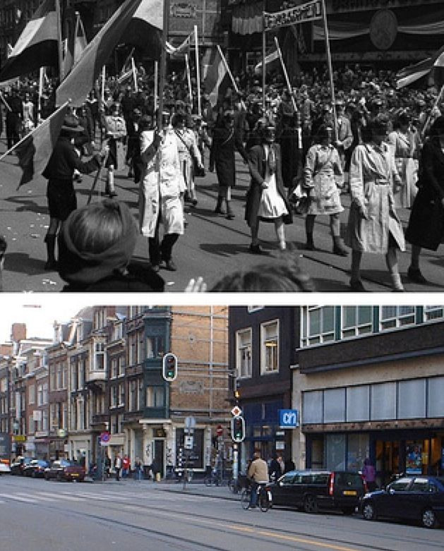

Tue, 23 Nov 2010 17:31:22 · photos · amsterdam · holland · europe · city
ghostly photos of occupied amsterdam mashed up

Ghostly photos of occupied Amsterdam mashed up with modern Amsterdam
• See galery here: http://su.pr/19TDP1
Tue, 23 Nov 2010 17:31:22 · photos · amsterdam · holland · europe · city

Ghostly photos of occupied Amsterdam mashed up with modern Amsterdam
• See galery here: http://su.pr/19TDP1